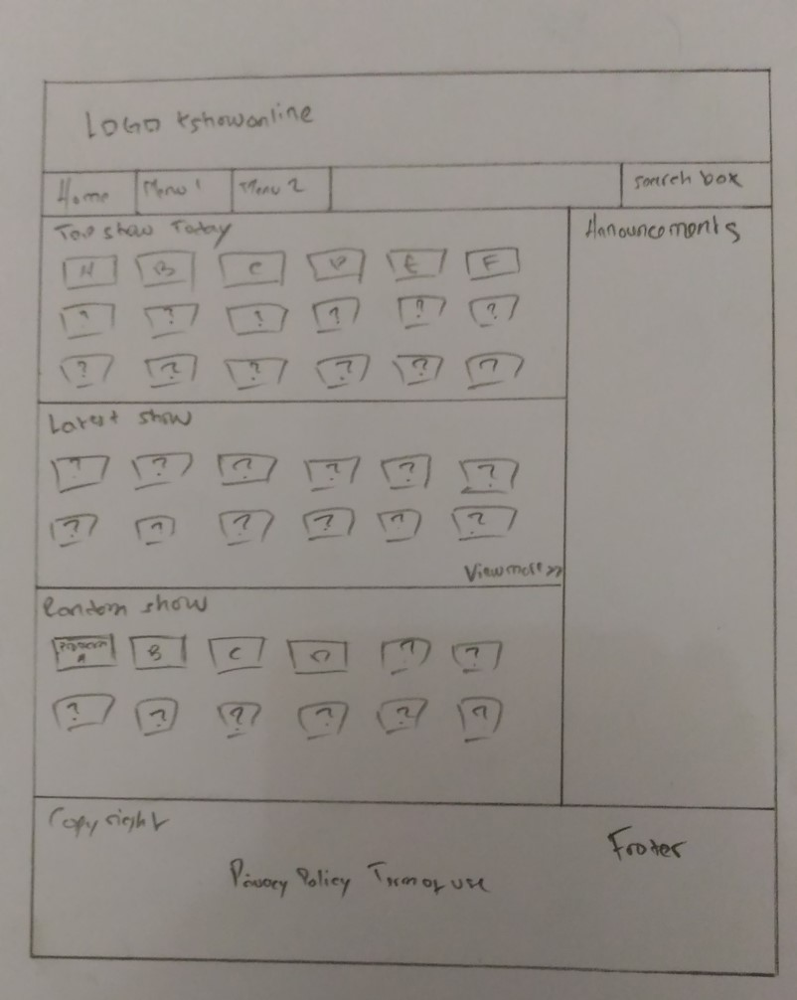

Salam kenal semuanya,
Perkenalkan nama saya Toni. Saya bergabung di Hacktiv8 karena ingin menjadi web developer yang handal. Mungkin saat ini, saya masih belum punya programmer maupun developer idola saya,karena belum mengenal banyak juga.
Semoga dengan mengikuti pelatihan intensif di hacktiv8 dan dengan usaha maksimal serta kerja keras, harapan saya menjadi web developer handal bisa tercapai.
Hobi saya:- Futsal
- Nonton


Alien Siap Menyerbu Bumi
kamis, 4 Agustus 2016 | 18.00 WIB
JAKARTA, HEBOH.COM - Astronom akhirnya menemukan planet yang mirip Bumi di luar Tata Surya, sebuah planet ekstrasolar
dengan radius 50% lebih besar dari bumi dan mampu memiliki air dalam bentuk cair. Penemuan ini merupakan langkah maju
yang sangat spektakuler dalam usaha pencarian planet-planet yang bisa digolongkan sebagai planet layak huni.
Dengan menggunakan teleskop ESO 3,6 m, tim pemburu planet dari Swiss, Perancis dan Portugal akhirnya menemukan
super-Bumi yang massanya 5 kali massa Bumi dan mengorbit bintang katai merah, yang sebelumnya diketahui telah
memiliki planet bermassa Neptunus. Para astronom juga menemukan bukti kuat yang menunjukkan indikasi keberadaan
planet ketiga dengan massa 8 kali massa Bumi itu menjadi basis kehidupan diluar bumi sekaligus menjawab fenomena
crop circle yang selama ini menjadi misteri.
Walaupun belum terjadi komunikasi, dipastikan crop circle yang terjadi
serempak diseluruh belahan bumi seperti yang terjadi di Jogyakarta itu merupakan sandi yang dikirim dengan pemindai
jarak jauh yang dikendalikan dari planet tersebut yang oleh Nato disebut Gylepsi 87 dalam gugus planet neptunus.
Serangkaian manuver militer yang dikomandani Jendral George McCormick dari Amerika Serikat sudah mulai
bergerak mengantisipasi segala kemungkinan invansi mahluk luar angkasa itu. Presiden Barrack Obama dalam
pernyataannya yang disiarkan oleh CNN pukul 03,00 dinihari ini mengajak agar semua kekuatan penghuni bumi
dipersiapkan menghadapi invasi tersebut. Tepat pukul 03.25, saya terbangun dari tidur, mimpi diserbu Alien. Cuma mimpi.
Alien Invasion:The Battle for Earth
Thinking, Learning, and Progressing More Efficiently and Effectively
Sulit dalam mengimplementasi sistem konsistensi dalam manajemen waktu.
Perancangan Jadwal kegiatan sehari-hari. Teknik yang ingin saya coba adalah teknik Fogg oleh BJ Fogg, yaitu "building a tiny habit"
Fokus dan tetap ikuti jadwal.
Kadang fixed, kadang growth, tergantung situasi. contohnya ketika aku lagi onfire, aku akan nyelesain semua persoalan yang susah, tadi ada
saatnya ketika aku menghindar akan persoalan yang susah dengan alasan aku tidak bisa, aku takut.
belum, karna masih inkonsistensi dalam melakukan tiap kegiatan yang udah aku rancang dan kadang masih takut menghadapi persoalan yang baru ataupun
tantangan yang baru.
Transformasi, transisi, dan animasi pada CSS3
Latar Belakang
Pertempuran dengan alien diawali dengan terbunuhnya para elit dunia. Suatu hari, ketika para elit dunia sedang berkumpul membahas kepentingan kelompok, tiba-tiba terjadi suatu ledakan dahsyat, para elit dunia yang berkumpul semua di situ semuanya, hancur. Alien bermunculan.
Permasalahan
Setelah kejadian yang menggemparkan dunia tersebut, para militan dari berbagai penjuru dunia berkumpul membahas apa yang sebenarnya terjadi. Apakah memang benar, para alien yang membunuh kaum elit atau hanya sebuah insiden yang tidak di sengaja oleh alien ketika mendarat di bumi. Hampir semuanya setuju bahwa alien lah yang membunuh para elit dunia. Perang tak terhindarkan. Human vs Alien, Begin!
Solusi
Perang berjalan sengit. Alien yang jumlahnya tak kurang lebih dari manusia, hampir semuanya ahli dalam bertempur. Alien menang !Tamat!
Konversi Waktu
Masukkan waktu yang mau dikonversiHasil Konversi :
Order String
Masukkan kata yang mau diurutHasil Konversi :
Palindrome
Masukkan kataHasil :
Math Basics
Pangkat AngkaHasil :
Akar Kuadrat
Hasil :
Hipotenusa
Hasil :
Luas Lingkaran
Hasil :
Rock Paper Scissor
Masukkan pilihan:Pilihan lawan: ?
Hasil :
Format Huruf
Masukkan kata/kalimat:Hasil :
Separate Number
Masukkan angka :Hasil :
Format Angka
masukkan angka :Hasil :
Daftar Kontak
Tambah Kontak :Cari Kontak :
Tebak Angka
Banyaknya peluang untuk menebak :Masukkan angka untuk menebak
Personal Contact Form
Perencanaan Sederhana Website Saya
E-commerce, mengenai perdagangan elektronik seperti lazada, tokopedia, dll
Hasil atau informasi apa yang paling ingin kamu sampaikan?Informasi mengenai produk perdagangan elektronik.
Bagaimana kira-kira kamu memproses pembuatan website dari awal hingga akhir?Penentuan ide, perancangan user interface(UI) dan user experience(UX), koding, pengumpulan database dan testing.
Pertanyaan seputar AWD dan RWB
Adaptive web design adalah kemampuan suatu website dalam hal ini tampilan website untuk beradaptasi dengan ukuran layar sedangkan responsive web design adalah merespon ukuran layar dari device dan bersifat selalu merespon, bagus, karena dengan adanya teknik tersebut ,dengan menggunakan device apapun untuk membuka website itu, ukuran akan disesuaikan sesuai ukuran device
Apakah hadirnya smartphone dan tablet mengubah desain web secara signifikan? Bagaimana kira-kira teknologi baru akan mengubah desain web di masa depan?menurut pribadi saya, tidak. karena desain web pada umumnya selalu tidak mengalami banyak perbedaan, tidak akan terlalu berpengaruh.
Bagaimana kira-kira orang yang memiliki kekurangan fisik menggunakan website? Apakah kita perlu menyesuaikan website untuk mereka juga? Solusi apa yang dapat mengatasi keadaan tersebut?mungkin tidak terlalu jauh berbeda kita,tidak. Karena aku percaya orang yang kekurangan fisik bisa melakukan apa yang orang normal bisa lakukan bahkan lebih.
Ide atau konsep apa yang sesuai denganmu saat mempelajari desain web?Simplisitas
Website Evaluation
Berikut list pertanyaan dari evaluasi beberapa website:
Pilihlah dan identifikasi beberapa website ataupun web app (lebih dari satu) yang kamu sukai. Kalau bisa selain social media yang populer.Website kshowonline, goal.com, dan Grab(web app)
Mengapa website tersebut kamu pilih?Simple, UI menarik, informasi cukup banyak
Hal apa yang disajikan atau dijual? Apakah ada masalah yang diselesaikan oleh website tersebut?Informasi-informasi yang sesuai dengan tema websitenya, masalah dengan UX dengan membuat UI yang lebih simple dan dimengerti user
Bagian mana pada website tersebut yang paling menarik dan paling penting?Informasi yang banyak ditata dengan rapi(goal.com), halaman utama sangat user friendly(Grab), halaman utama berisi latest show, top show dan random sehingga mempermudah user dalam melakukan pencarian
Deskripsikan website tersebut secara visual, dengan minimal 5 sifat. (elegan, sederhana, cantik, minimal, gelap, terang, dll)sederhana, minimal, user friendly,terang,penataan yang baik
Deskripsikan sifat konten, fokus, atau tujuan website tersebut, dengan minimal 5 sifat. (teoritis, seru, lucu, serius, praktis)Tujuan dari websitenya, masing-masing menyajikan informasi yang lengkap sesuai dengan tema dari websitenya
Seberapa mudah kamu dapat menemukan hal yang kamu cari dari halaman utama? Bagaimana jika dari halaman lain?mudah, dan waktu yang dibutuhkan juga lebih cepat, tapi kalau dari halaman lain mungkin informasi yang tertera lebih lengkap tapi waktu yang dibutuhkan untuk mengakses lebih lama
Seberapa mudah kamu dapat browsing semua konten di dalamnya?sangat mudah
Apa yang kamu rasakan setelah berada di website tersebut? (senang, bosan, pintar, tenang, khawatir, buang waktu, terbantu)tentunya ketika kita mengunjungi sebuah website karena ada informasi yang mau kita cari, jadi saat berada dilaman tersebut merasa terbantu
Jika website tersebut menjual sesuatu, apakah kamu pernah membeli sesuatu yang di jual di sana? Mengapa dan mengapa tidak?untuk kshowonline dan goal, tidak karena mereka tidak menjual sesuatu tapi untuk grab karena memang target mereka menjual sesuatu, yaa pernah, sering malahan
Wireframes Halaman Utama KshowOnline
Masalah yang ingin dipecahkan melalui tampilan visual
Halaman Utama KshowOnline terdapat menu shows list, latest show, top viewed dan top rated serta terdapat 3 column menjabar kebawah dengan kategori berbeda-beda dan juga terdapat search box. Berikut penjelasannya :
Show listmenampilkan semua program variety dari a-z latest show
menampilkan episode terbaru dari program variety
top viewedmenampilan acara variety dengan jumlah view terbanyak
top ratedmenampilkan acara variety show dengan jumlah rate terbanyak
search boxuntuk mempermudah user melakukan pencarian
Dan 3 kategori yang berbeda itu adalah
Top show todaymenampilkan acara variety berdasarkan jumlah view dan rate terbanyak di hari itu juga
Latest showmenampilkan episode terbaru dihalaman utama sehingga mempermudah user dalam melakukan pencarian
Random showmenampilkan random show dari variety program sehingga apabila user bingung dalam menentukan variety yang mau di tonton, pilihan ini bisa berguna
Contoh wireframe page utama dari kshowonline
Core Values
Berikut pertanyaannya :
Pilihlah berbagai nilai yang tertera dalam kumpulan kata berikut, yang kamu pikirkan ataupun rasakan saat kamu sedang dalam keadaan paling bahagia, bangga, puas, atau tenang. Tambahkan yang lain jika perlu.Antusias, Berani, Gembira, Harmonis,Percaya
Tulislah kalimat atau paragraf yang mengandung nilai-nilai yang kamu pilih. Jelaskan mengapa nilai tersebut berarti bagimu.Ketika saya lagi bahagia, bangga, puas dan tenang, saya akan merasa gembira dan menjadi sangat antusias, saat momen itu juga saya menjadi berani dan percaya bahwa saya bisa melakukannya. Ketika saat itu juga, saya merasa harmonis. Karena nilai tersebut bisa membawa saya bergerak ke arah yang lebih jauh.
Ceritakan topik yang orang lain sering atau baru saja tanyakan atau minta saran kepadamu.Bagaimana cara kamu mengendalikan emosi ? Bagaimana kamu masih tetap bersikap tenang ketika ada permasalahan yang datang ?